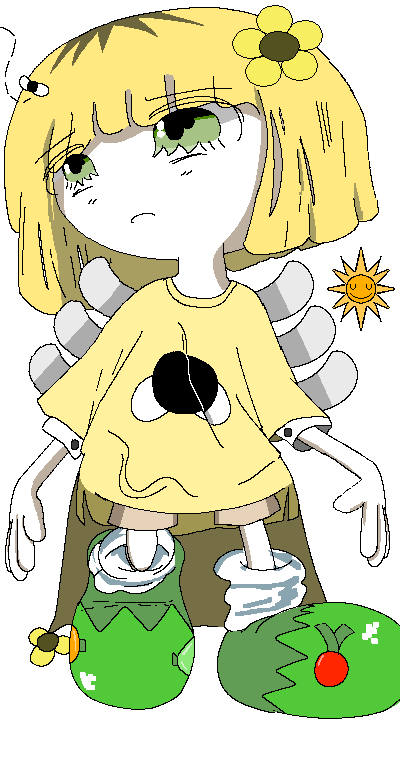

|

|

Phoebe
Introduced 6 July 2026
Phoebe's Associated Music:
Play Music"Phoebe's Theme: The Unwound Sunflower"
General Information:
Phoebe is a recurring character in Colormill.
Personality:
Phoebe is naturally very reclusive and keeps to herself. She feels very strongly about wanting to live life under little to no intensity to where she can almost always be found lingering lazily alongside her floating cloud gardens, periodically taking care of her plants. She struggles when it comes to processing information, and can significantly tense up if she's in a situation where she has to think critically.
Spawn Quirk:
Phoebe has the ability to spawn miniature suns. She can generate and control heat from the suns. She can also use them to convert light from the actual sun into energy for her own functional benefit, operating similarly to photosynthesis but with more use cases than simply fueling her metabolism.
[Colormill Home]
Project Launched 11 February 2026